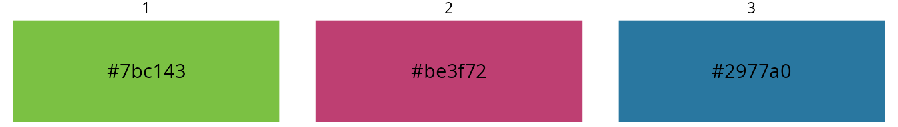
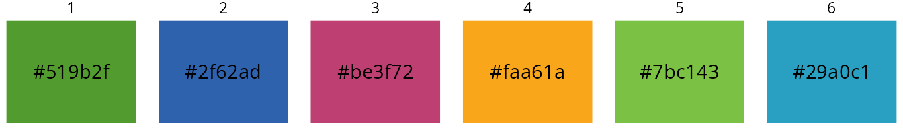
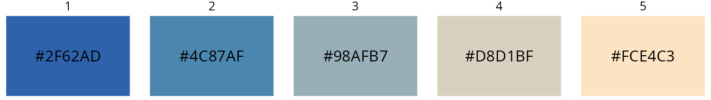
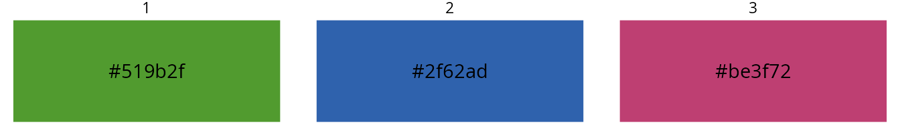

thlGraphs Vignette Colors
thlGraphs-vignette-colors.RmdDemostration of using THL’s colors
thlGraphs defines colors, color palettes and color sets
matching THL’s visual guidelines and graphical theme.
Colors are named as well the palettes.
Color names
Picking single colors is done by referring them by their name in
colors_thl(). colornames_thl lists all
predefined color names. Names are defined both in English and in
Finnish.
Displaying both English and Finnish main color names:
colornames_thl()
fi en
1 thl.vihrea thl.green
2 tumma.vihrea dark.green
3 tumma.harmaa dark.gray
4 teksti text
5 keski.harmaa middle.gray
6 vaalea.harmaa light.gray
7 tausta.harmaa background.gray
8 oranssi orange
9 tumma.oranssi dark.orange
10 punainen red
11 rubiini ruby
12 pinkki pink
13 roosa rosa
14 tumma.violetti dark.violet
15 vaalea.vihrea light.green
16 turkoosi turquoise
17 tumma.turkoosi dark.turquoise
18 syaani.sininen cyan.blue
19 petrooli petrol
20 sininen blue
21 tumma.sininen dark.blue
22 hiekka sand
23 vaalea.turkoosi light.turquoisethlGraphs also defines many secondary colors which are
tinted versions of the main colors. These colors can be found eg. in
continuous color palettes. Names for these can be found with
colornames_thl(include.secondary = TRUE)
Usage of colors and color names
In following examples we pick some of these colors and preview them as plot.
colors_thl() returns colors’ corresponding hex-values.
plot_colors draws a plot showing the hex value of input and
the corresponding actual color.
Example of picking three colors by their name and plotting them:
mycolors <- colors_thl(c("thl.green", "ruby", "petrol"))
plot_colors(mycolors)
Usage of color palettes
Color palettes define a group of colors which can be used together.
In thlGraphs there are three types of palettes depending
on the use case. Options are:
- sequence (“s1”…“s6): six different palettes, colors changing from lightr to darker
- diverging (“k1”…“k6): six different palettes, colors changing from one to another, having a light color in middle
- categorical (“quali”, “line”, “area”): three different palettes for marking different groups
palette_thl returns palette’s hex-values of colors. User
selects name of the palette and number of colors.
Example of picking six colors from a qualitative palette and plotting them:
mypalette <- palette_thl(name = "quali", n = 6)
plot_colors(mypalette, nrow = 1)
Example of picking five colors from a series palette and plotting them:
mypalette <- palette_thl(name = "s2", n = 5)
plot_colors(mypalette, nrow = 1)
Example of picking five colors from a diverging palette and plotting them:
mypalette <- palette_thl(name = "k4", n = 5)
plot_colors(mypalette, nrow = 1)
Usage of color sets
In addition to color palettes thlGraphs defines
predefined color sets for categorizing groups. These sets are predefined
for meeting accessibility requirements.
There are two types of sets for both “line” and “area” type of plots. These sets are defined for couples and triples of colors.
colorset_thl returns set’s hex-values of colors. User
selects type of the set, number of colors in the set and serial number
of the set.
For example plan is to make stacked bar chart and there are two different groups:
colors <- colorset_thl(set = "area", n = 2, set_id = 1)
plot_colors(colors)For example plan is to make line chart and there are three different groups:
colors <- colorset_thl(set = "line", n = 3, set_id = 1)
plot_colors(colors)